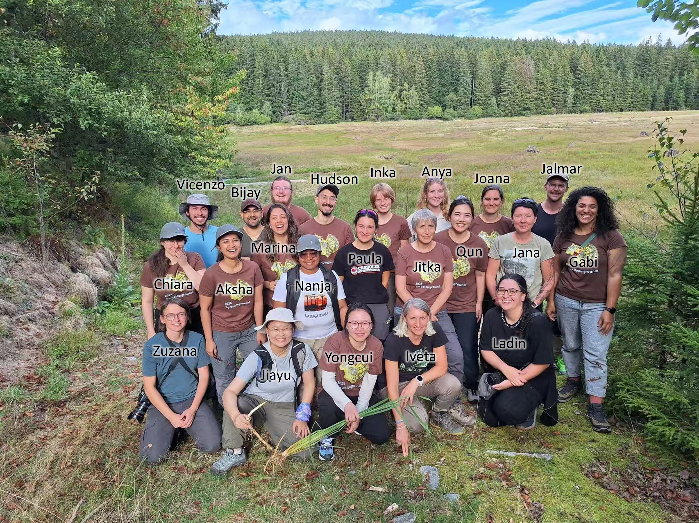

Attending the Go belowground 2026 training course in Czech Republic
Jiayu enjoyed the experience during 13-19 September in Nové Hrady, Czech Republic. The course is composed of lectures and practical trait assessments enabling application of taught methods.
The course focused on the theoretical background and practical assessment of plant functional traits which can be found on belowground plant organs in temperate herbs. The course was composed of lectures and practical trait assessments enabling application of taught methods. The lectures were accompanied by field excursions, plant sampling and trait assessment in the laboratory. Methods of functional traits assessment including: clonal and bud bank traits, herb-chronological analysis using morphological and anatomical markers, and plant age assessment.
This training course has been held for 10 years since 2016. It is a great chance for all the people around the world learning more about the hidden belowground life. Go Belowground is not only about learning more about belowground plant ecology, but also about meeting people who share the same curiosity and interest in what is happening belowground.
The flexible clonal expansion and resource reserve strategies of clonal plants to heterogeneous habitats play a key role in their widespread distribution across ecosystems and promote plant community succession. Through my recent work, I increasingly realized that the importance of plant morphology and architecture belowground remains underestimated in coastal wetland ecosystem. This course provide an invaluable opportunity to deepen my understanding of belowground plant ecology and strengthen the theoretical and methodological framework of my research in coastal wetland.
It was the second time for me coming Czech Republic. I really enjoyed talking to new and old friends here, talking about lives, cultures, interesting studies from different areas. I was inspired by their big passion of scientific research, hoping a deepen further collaboration with ExFuMo group in Czech Republic.
